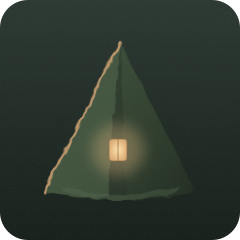
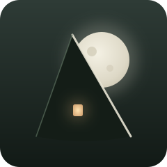
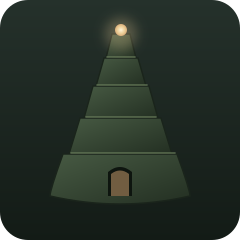
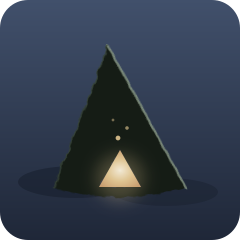
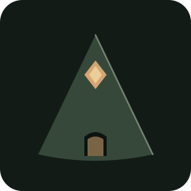
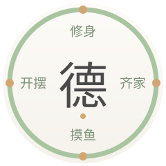
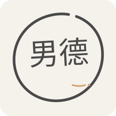
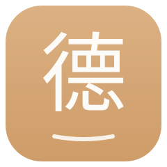
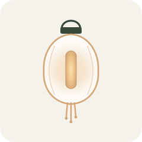
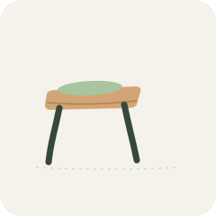

男德学院 LOGO 草案预览 V4（双线）
2026-08-21 白机提案 · 2026-08-23 黑机补预览页 · 双线品牌架构：网站线（松弛手作×莫兰迪）+ 德塔线（Δ形变×油画厚涂）
旧版 V3 预览见 preview.html（摸鱼方向已作废归档）
一、德塔线：Δ 形变五案（游戏内标识/加载页/纹章）
主题锁定 Δ 形变 + 美术规范 V2.1 油画厚涂质感。全图形无文字，缩放可靠性天然高。

NDO-1 厚涂岩塔Δ （白机主推）
主标候选
Δ=厚重岩体塔，厚涂块面+笔触置换滤镜+暖窗（总有一盏灯）

NDO-2 月护Δ
叙事最强
Δ剪影挡满月，冷银轮廓光+唯一暖窗——班走廊月亮CG符号化

NDO-3 阶梯塔Δ
最像学院
5层退台高塔，层线即年代地层，塔尖嵌加护宝石

NDO-4 虚空裂Δ
黑深残
负空间：底边撕裂小Δ，裂缝透微光+光尘（虚空蓝紫系，体系外唯一例外色）

NDO-5 基准Δ
favicon/符文骨架
最小形变：塔面+门洞+赭金菱形，16px单焦点
德塔线缩小测试（NDO-1 / NDO-2 / NDO-5）
16px 下纹理方案必然糊成色块——这正是 NDO-5 存在的意义
二、网站线：全新四案（社区站门面）
方向修正：回归「学院门面」的松弛正经感，摸鱼藏鱼梗不再延续。⚠️ 网站线草案文字为 <text> 运行时渲染（本页已引文楷 webfont），定版需矢量固化与字体解耦（V2 已有 de-path.txt 成熟经验）。
WEB-1 门匾（横版 560×120）
TopBar 即门楣
深墨绿横匾+暖赭双线框+如意云头角饰，加载动画可做「挂牌落定」

WEB-2 四训环徽
北大范式×四训
断弧四段=修身齐家摸鱼开摆，断口暖赭点=四成员围坐，中心文楷「德」

WEB-3 手绘松弛圈 （白机主推）
主标候选
一笔不闭合的手绘圈+微倾「男德」+暖赭落款——最贴合松弛手作品牌词

WEB-4 德字 app 图标
favicon 形态
暖赭圆角方块+米白「德」+字底躺平线（最轻的一笔，外人只见装饰）
网站线深浅底 + 缩小测试（WEB-3 / WEB-4）
WEB-3 圈在 16px 仍可辨；WEB-4 单焦点「德」字 16px 靠色块+字形轮廓撑住
三、网站线·发散二批（2026-08-23 黑机：不绑院名的意象方向）
院长指示：网站 LOGO 不局限于「男德学院」名称。五案全部脱离院名文字，从「社区本质（53万条消息/围坐/家）+ 文化词（搬板凳/躺平）+ 已有资产（岁月史书/德塔塔窗）」发散。全图形无 <text>，天然抗字体环境与缩小。

WEB-5 长明灯·书院灯笼 （黑机主推）
概念最顺
晚间群聊最活跃——「总有一盏灯亮着的地方」。灯笼透光竖窗与德塔塔窗暖光暗对仗（屋外灯/屋内窗），社区=亮灯处

WEB-6 小板凳
群聊吃瓜日常
「搬好小板凳」=围观吃瓜的入场券。歪凳面+绿坐垫+外八凳腿，把松弛感画进家具

WEB-7 年轮
岁月史书呼应
2022 至今 53 万条消息，一圈一圈聊出来的年轮。偏心不完美同心弧+中心暖赭年髓，缺口处一颗正在长的新芽

WEB-8 躺平的人
行为符号
不写「人」字——直接画一个翘着二郎腿躺平的人。开摆的行为符号化，Zzz 三点渐小克制不卡通

WEB-9 冒泡小屋
家+群聊
烟囱冒的不是烟，是聊天气泡——「这个家的烟囱在冒话」。家屋与德塔堡垒对仗（网站是家/德塔是异世界）
发散二批缩小测试（五案 64/32/16px）
64px
32px
16px
64px
32px
16px
64px
32px
16px
WEB-9 置于深底
四、组合建议与验收维度
白机组合建议（V4 第一批）：网站主标 WEB-3（松弛圈）+ 网站 favicon WEB-4（德字图标）+ 德塔主标 NDO-1（厚涂岩塔）+ 德塔符文 NDO-5（基准Δ）；两线以「暖赭金」为血缘暗号（网站落款点 = 德塔塔窗同色 #D4A574）。
黑机补充观察（2026-08-23）：
- NDO-2 月护Δ叙事关联最强（班走廊月亮 CG 已定稿 CG-1/CG-2，资产可互相引用），若德塔主标想带故事性可与 NDO-1 二选一；NDO-1 胜在「最像 LOGO」的图形纯度
- NDO-4 虚空裂Δ的蓝紫底是美术规范体系外色，若选定需同步美术规范 V2.1 增补例外条款
- V4 第一批网站线四案全部含 <text> 文字，16px/字体缺失场景不可控--定版必须矢量固化（黑机有 opentype.js + 文楷 TTF 的成熟管线，可直接跑）
- V4 第二批网站线五案全部纯图形无文字，天然抗字体环境与缩小，是「不绑院名」方向的直接响应。WEB-5 长明灯与德塔塔窗暖光形成屋外灯/屋内窗暗对仗，血缘最自然
- Seedream 精绘出图路径（黑机）：德塔线传丘游侠立绘或帝桥 bg 作画风参考；世界书铁律--「男德」对外人只是无意义音节，LOGO 不做任何性别化表达